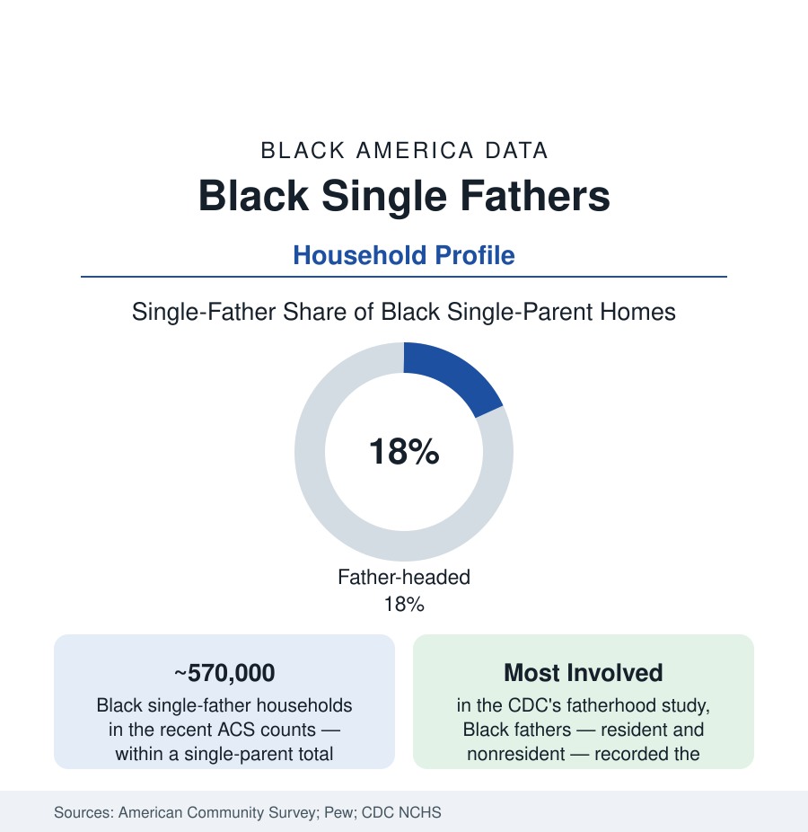

Black Census
Black Single Fathers: The Fastest-Growing Household Nobody Counts First
Roughly 570,000 Black fathers raise children alone — a population that has grown for five decades and outperforms its stereotype in the outcome data. The census profile.

The family-structure data of this atlas are usually read through mothers, and the father file corrects the frame: roughly 570,000 Black children are being raised by single fathers in the recent census counts — fathers heading about eighteen percent of Black single-parent households, a share that has climbed steadily since the 1960s (when single fathers of any race were a rounding category) and that makes Black men the most likely of any group to be doing this work. Beside the resident count stands the larger file the stereotype never cites: the CDC's national fatherhood study, which measured fathers' daily involvement — feeding, bathing, reading, playing — and recorded Black fathers, living with their children or not, at the top of the table. This article profiles the fathers the data actually show.
The Count and Its Growth
The household series give the population its trend: single-father households of all races quadrupled as a share of single-parent homes across the post-1970 decades (the Pew analyses put fathers at roughly a quarter of single parents nationally in the recent counts, up from fifteen percent in the late 1960s), with the Black single-father population the series' most consistent growth line — driven by the same forces the family file tracks from the other side (the custody data's slow shift — fathers gaining sole and joint custody at rising rates in the family-court studies, the widowed and divorced fathers of earlier eras joined by never-married fathers raising children from infancy, the kinship fathers of the grandparents file's mirror image: the uncle, the godfather, the stepfather formalized in the household roster). The ACS household tables give the portrait its economics: Black single fathers' median incomes run above Black single mothers' (the gender earnings file operating inside the category) and below two-parent households'; their poverty rates land between — the single-earner penalty applying at a discount the gender gap sets. Their children's arrangements — the childcare patchwork, the kin networks, the school registrations that presume a mother's name — fill the qualitative literature's account of a system built for the other single parent.
The Involvement Data: The File That Refuses the Stereotype
The CDC's National Health Statistics fatherhood report (built on the National Survey of Family Growth's father module) is the dataset this article keeps returning to because it measures behavior instead of residence: among fathers living with children under five, Black fathers led all groups in the daily-care measures — bathing and dressing, reading, playing — and among nonresident fathers, Black fathers' involvement rates (visits, caregiving tasks, the shared meals of the survey's items) likewise ran at or above the comparison groups'. The nonresident-father file extends the picture the residence binary hides: the Fragile Families study (the great longitudinal study of unmarried parents, its sample majority Black and Latino) documented nonresident Black fathers' contact and support — formal and informal, cash and in-kind (the diapers-and-groceries economy the child-support data do not count) — persisting at rates the 'absence' framing does not predict, declining most where the system's instruments (the support orders set against incomes the fathers do not have, the arrears and license actions of the enforcement file) convert willingness into warrants. The education data add the outcome side: children of involved nonresident fathers and of single fathers show school-engagement measures in the NCES parent data that track the involvement, not the address.
The System Around Them
The policy and service file records the mismatch between the population and its infrastructure: the parenting programs, shelters, and family services designed overwhelmingly for mothers (the fatherhood programs the exception — the federal Responsible Fatherhood grants' evaluations constituting the sector's research base), the custody and support systems' documented asymmetries, the workplace file (single fathers' schedule and leave data nearly unstudied as a category — the surveys' parent items defaulting maternal), and the housing file (the single father's household read by the assistance formulas as a lesser need). The cultural record has been rebuilt by the population itself: the barbershop and church fatherhood ministries, the single-father networks and media of the social era, the custody-reform advocacy whose plaintiff is increasingly this article's subject. The demographic projection runs one way in every series: the share keeps climbing.
Reading the Single-Father Data
Five hundred seventy thousand households, the highest measured involvement in the national fatherhood study, and a policy architecture built for somebody else: the single-father file is the census section's cleanest demonstration that the data, read carefully, are kinder than the discourse — and more demanding. The fathers are counted here as what the numbers show: present, working, and raising the next set of numbers in this atlas.
More in Black Census
The Black Population of the United States: Size, Definitions, and Distribution
The Black population of the United States totals 52.8 million — 15.4 percent of the nation. How the Census Bureau defines and counts the population, and where it lives.
Black Median Household Income in the United States
Black median household income stands at $56,490 in the Census Bureau's annual income report — how the figure is measured, how it compares, and what drives it.
The Black Poverty Rate: Levels, Children, and the Long Trend
The official Black poverty rate is 17.1 percent — against 11.1 percent nationally and 7.7 percent for non-Hispanic White Americans. How poverty is measured and what the data show.
Source: U.S. Census Bureau, American Community Survey and Current Population Survey; Pew Research Center fatherhood studies; National Center for Education Statistics parent-involvement data.